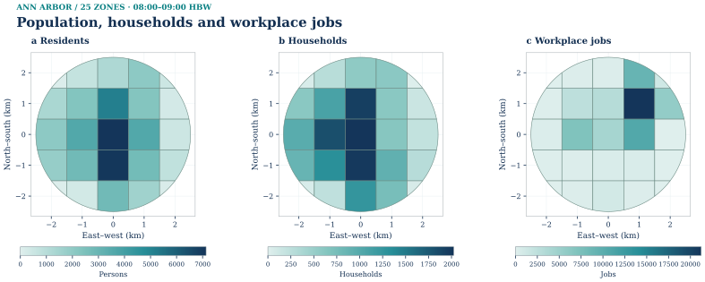
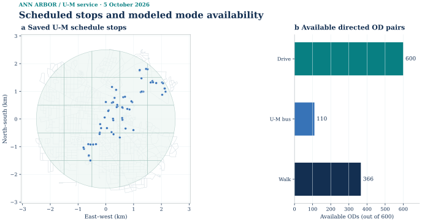
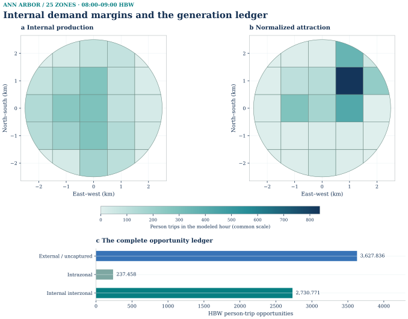
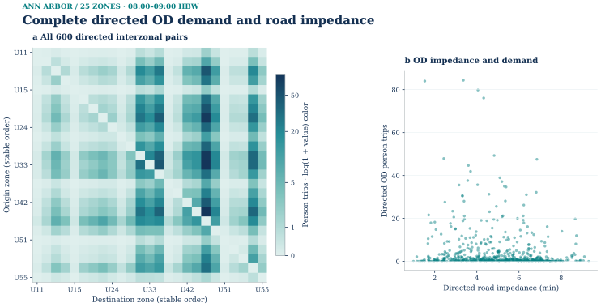
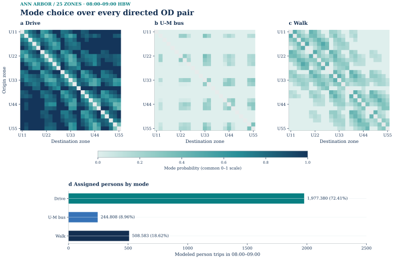
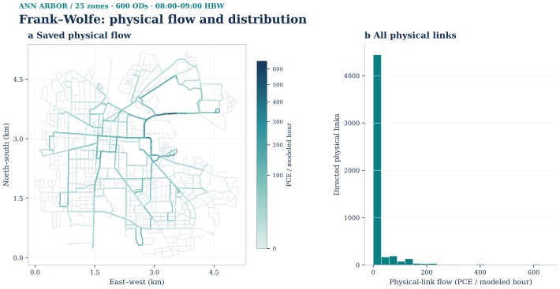
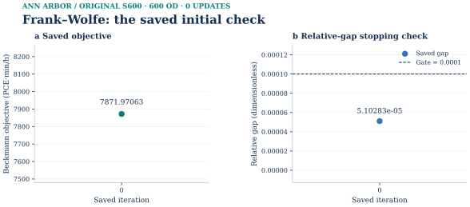
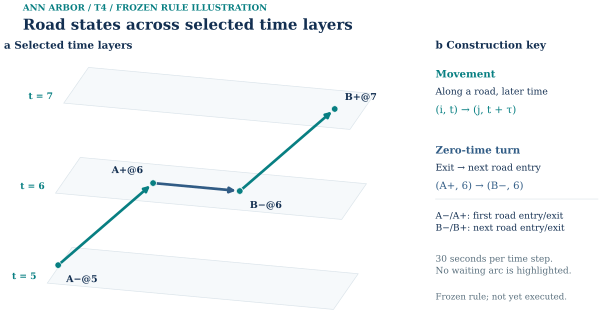
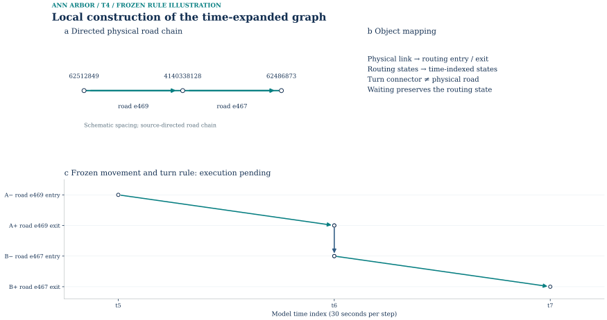
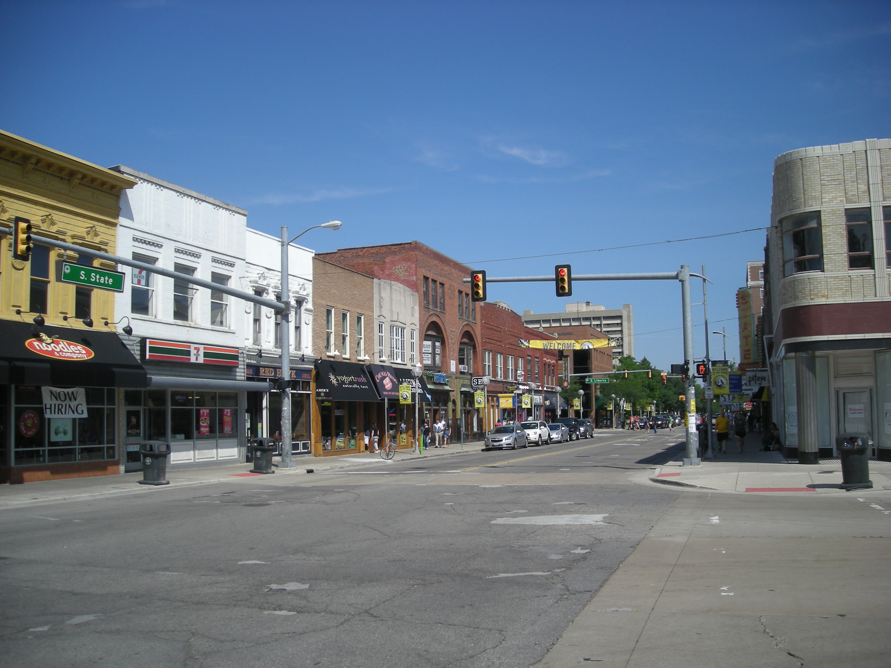

Local reading preview. The four-stage calculation has been completed and independently checked. This reading edition brings its saved methods and numerical summaries together; the underlying materials have not all been cleared for public release.
Scope and model instance
The Ann Arbor case models weekday home-based work (HBW) travel during 08:00–09:00 in a 19.633 km² central urban subregion. A 2.5 km circle centered near the University of Michigan Diag includes downtown, surrounding homes, workplaces and connected streets. The university is a geographic reference and a source of bus schedules; the model population is not a count of students, university commuters or campus property users.
A fixed 5 × 5 metric grid clipped to the circle produces 25 model zones. A 400 m routing halo supplies surrounding paths without extending the demand boundary. All 600 possible directed interzonal pairs are reachable and carry positive modeled demand. Generation, distribution, mode choice and static assignment form one forward pass; assignment does not feed back into mode choice or trip generation.
This is an engineering scenario built from local geography, source statistics and explicit behavioral assumptions. It is useful for examining a reproducible calculation, but has not been calibrated to a local household survey or validated against observed link counts. Its boundary and source years must remain attached to every reported result.
Four-stage results at a glance
| Stage | Saved result | How to read it |
|---|---|---|
| 01 / Generation | 6,596.065 person-trip opportunities | 3,627.836 external or uncaptured; 237.458 intrazonal; 2,730.771 internal interzonal. Only the last component advances to the OD model. |
| 02 / Distribution | 2,730.771 persons across 600 directed OD pairs | 25 zones; no interzonal OD subsampling. Intrazonal cells are zero by the declared accounting convention. |
| 03 / Mode choice | Drive 1,977.380; U-M bus 244.808; walk 508.583 persons | OD-specific availability and costs determine the split. Drive converts once to 1,647.817 PCE for road assignment. |
| 04 / Assignment | 600 vehicle ODs; relative gap 5.103 × 10−5 | The initial all-or-nothing loading passes the frozen 10−4 gap threshold. Frank–Wolfe performs zero update iterations. |
Persons and passenger-car equivalents (PCE) are different units. These are saved model results for local review, not measured travel volumes or a new public data release.
Inputs and preparation
The household and population inputs come from the 2020–2024 ACS five-year tables; employment comes from 2021 Michigan LODES workplace jobs. Area allocation from 60 intersecting Census block groups gives approximately 52,954 residents, 19,287 households and 69,183 workplace jobs in the circle. These are allocated source estimates, not an observed 2026 census of the study area. The generation calculation retains the unrounded household total of approximately 19,286.74.
| Input | Role in this case | Scope or limitation |
|---|---|---|
| ACS population and households | Resident context and household-based generation | 2020–2024 five-year estimates, allocated by area rather than a local commute survey. |
| 2021 LODES workplace jobs | Relative attraction weights | Jobs are normalized to internal productions; job counts are not an independent total of trips. |
| Census-derived geography | Allocation into the fixed 25-zone grid | Source block groups and final model zones are different objects; see the geography-vintage note. |
| OpenStreetMap routing extract | Road impedance, tagged access and static assignment | Fixed circle plus routing halo; 5,138 directed physical road arcs in the accepted four-stage graph. |
| U-M GTFS, 5 October 2026 service day | Bus availability and generalized travel costs | U-M buses only. It does not represent the complete TheRide network or an exact departure-time itinerary. |
The four-stage routing graph was newly compiled from tagged OSM data. It is separate from the earlier City Road Centerline preflight network, which had 4,059 directed source links. Their link counts, geometry and provenance must not be mixed. The accepted static graph contains 5,138 physical traversal arcs within 14,203 total graph arcs; turn and other graph arcs are not additional physical roads.
Tagged direction and motor access are applied before routing. The construction removes 127 explicit forbidden turn pairs and uses conservative closures for five via-way relations; 29 other restriction relations could not be matched to eligible movements. Zone access uses in-zone motor-road entries on the strongly connected graph. These are documented model rules, not a field certification of current legal access.
This local reading revision adds eight figures drawn from the accepted saved 25-zone four-stage inputs and outputs. All 600 directed OD pairs and the actual 5,138 physical traversal arcs are retained; no solver was rerun. The original released generation/distribution figures remain available below, together with the historical photograph and all source links. New local derivatives do not constitute a public release.




Scheduled stops and modeled mode availability


Description, units and scope
Left: the 63 saved U-M GTFS stop locations used as input to the accepted mode-cost build, over the accepted 25-zone OSM physical network. Right: actual availability in 600 directed OD pairs—drive 600, U-M bus 110, walk 366. The modeled U-M service uses 109 scheduled route-stop legs and frequency-based waits; 11 zones are within the stop-access rule. Stop symbols are planned service locations, not observed GPS. No TheRide service, exact departure-time itinerary or verified pedestrian connector is implied. © OpenStreetMap contributors; University of Michigan GTFS. Local reading revision. R11 layout repair: both panels share the actual map top and bottom bounds; the stop count is stated here rather than overprinted on the map.
PNG · SVG · PDF · Source record

01 / Trip generation
The generation rule multiplies area-allocated households by 1.90 HBW person-trip opportunities per household per weekday and an 18% share for the modeled hour. The 1.90 rate is transferred from Boston Region MPO TDM23.2.0, Table 74; the hourly share is an engineering assumption. Neither was fitted to Ann Arbor observations.
An assumed 45% internal capture and an 8% intrazonal share of captured demand partition the result. Workplace jobs distribute attractions across zones, then normalization matches their total to internal productions. The ledger prevents external and within-zone travel from being silently assigned to the internal interzonal road model.
| Demand component | Person trips | Destination in the workflow |
|---|---|---|
| Generated total | 6,596.065080003 | Starting opportunity ledger |
| External or uncaptured | 3,627.835794002 | Reported separately; not assigned inside the subregion |
| Intrazonal | 237.458342880 | Reported separately; omitted from interzonal OD cells |
| Internal interzonal | 2,730.770943121 | Passed to distribution, mode choice and the appropriate mode-specific loading |
The new geographic figure shows all 25 production and attraction zones on a common scale, followed by the complete generation ledger. The earlier released figure retained below shows the twelve largest production zones; that selected plot was not a reduced model.



Earlier released figure — original image and source notice
02 / Trip distribution
A doubly constrained gravity calculation combines the generation margins with directed road-network impedance. Its deterrence kernel is exp(−0.08 × minutes); the coefficient is an engineering assumption. Iterative proportional fitting (IPF) balances production and attraction margins before a declared 90% forward / 10% reverse period convention is applied once to obtain directed OD demand.
The saved matrix contains 2,730.770943121 person trips over all 600 feasible directed interzonal pairs. IPF takes five iterations, with a maximum absolute margin residual of 1.18622395 × 10−7 person trips. Intrazonal entries remain structural zeros. No small OD sample substitutes for the full matrix, and unreachable pairs are not represented by an artificial large finite cost.
The 25-zone heatmap uses log(1 + person trips) to keep small and large cells legible. Its color scale does not change the stored demand or units. Without a local observed OD matrix, this is a model-generated travel pattern rather than validated commuting behavior.



Earlier released figure — original image and source notice
03 / Mode choice
Mode choice has already been computed for the same OD matrix and hour. It compares drive, U-M bus and walk using OD-specific generalized minutes, with a logit sensitivity of 0.07 per generalized minute and a value of time of $20 per hour. An unavailable mode receives zero probability for that OD; it is different from a modeled alternative attracting very few trips.
All 600 OD pairs have driving available. Walking is available on 366 pairs under a 45-minute choice limit. U-M bus is available on 110 pairs using schedule-derived route-stop legs, at most 700 m of straight-line stop access, a ×1.3 access-distance proxy and frequency-based waiting. These are approximate costs, not fully timed multimodal itineraries or verified parcel-access routes.
| Mode | Available OD pairs | Modeled persons | Use in the next stage |
|---|---|---|---|
| Drive | 600 | 1,977.380 (72.41%) | ÷ 1.2 persons/vehicle × 1.0 PCE/vehicle = 1,647.817 PCE |
| U-M bus | 110 | 244.808 (8.96%) | Retained as a modal result; not added to the vehicle-OD assignment |
| Walk | 366 | 508.583 (18.62%) | Retained as a modal result; no pedestrian capacity assignment |
The split represents all 2,730.771 internal interzonal persons, with none dropped. Percentages can differ from 100% by rounding. These are outcomes of the limited U-M service representation and assumed utilities, not measured local modal shares. The mode-choice figure below and its selected plot data are included for local reading. They remain outside the existing public asset release; this revision does not change that release status.



04 / Physical-link assignment
The vehicle-demand conversion is applied once, giving 1,647.816622273 PCE for all 600 positive vehicle ODs. Static Frank–Wolfe assignment loads this exact demand on the frozen turn-expanded graph. BPR travel time uses α = 0.15 and β = 4; declared road-class and lane proxies supply missing speed or capacity fields. This model uses soft capacity and does not represent time-dependent queues or spillback.
The initial all-or-nothing loading already meets the frozen relative-gap threshold of 10−4. The saved gap is 5.10282992009334 × 10−5, so Frank–Wolfe stops at iteration 0. That means zero update steps after the initial loading; it does not mean assignment was skipped, nor does it support an iterative convergence-speed comparison.
| Quantity | Saved value | Interpretation |
|---|---|---|
| Vehicle OD pairs | 600 | All positive vehicle ODs are loaded |
| Assigned demand | 1,647.816622273 PCE | Demand passed directly from mode choice |
| Beckmann objective | 7,871.970629927 PCE-min | Integrated static objective; not total person travel time |
| Full-graph relative gap | 5.10282992009334 × 10−5 | Below the predeclared 10−4 tolerance |
| Frank–Wolfe updates | 0 | A single initial gap check, not a multi-step trace |
| Maximum node-balance residual | 5.684 × 10−13 PCE | Independent flow-conservation reconstruction |
| Physical road projection | 5,138 directed road arcs | Road travel times and v/c recomputed with zero maximum discrepancy in the recorded projection check |
| Maximum physical-road v/c | Approximately 0.718 | Model loading/capacity ratio for this scenario, not an observed traffic condition |
Turn and connector arcs stay in the graph solution but are excluded from physical-road loading charts. The physical-flow and initialization-diagnostic figures below are included in this local reading revision. Numerical acceptance and permission to redistribute an image or dataset remain separate questions; these additions do not change the approved public image set.
Frank–Wolfe: physical flow and distribution


Description, units and scope
Saved Ann Arbor static Frank–Wolfe endpoint for 08:00–09:00 HBW. The map and 22-bin histogram use the same complete 5,138-link physical-flow vector, including 3,147 exact-zero links; 1,991 links exceed 1e-6 PCE. Flow is PCE accumulated during the declared one-hour period, not persons or flow per simulation time step. The map uses a square-root sequential color scale with original-unit ticks and gray road context; histogram counts are linear and no links are omitted. Turn, access and other nonphysical solver arcs are excluded. Only the saved iteration-0 initialization exists; FW performed zero subsequent updates. Opposite directed geometries retain a 3 m display offset; values and IDs are unchanged. This is a modeled engineering scenario, not observed traffic. © OpenStreetMap contributors / ODbL 1.0. R11 layout repair: map and all-link histogram share measured top and bottom panel bounds. The original saved physical-link IDs, exact flow vector, geographic vertices, display offsets, histogram edges and counts remain unchanged.
PNG · SVG · PDF · Source record

Saved initial checks and original endpoint views
Saved initial checks and original endpoint views
Frank–Wolfe: the saved initial check


Only the actual saved iteration 0 is shown: objective 7871.97062992656 PCE·min/h and relative gap 5.10282992009334e-05, against the unchanged 0.0001 stopping gate. There were zero updates. Each panel contains a single numerical point; no missing trajectory or second state is inferred. The companion physical-flow map reads this method’s own saved vector. This original 1e−4-gate instance is distinct from the later S600 1e−5-gate run, which saved iterations 0 and 1.
SVG · PNG · PDF · Source data

Static assignment: demand margins and physical endpoints
Static assignment demand margins

Complete evidence · same figure · SVG · PNG · PDF · Plot data · Source record · Caption

Physical demand endpoints

Complete evidence · same figure · SVG · PNG · PDF · Plot data · Source record · Caption

Time-expanded network and path examples
Time-expanded network in layers


Complete evidence · same figure · SVG · PNG · PDF · Plot data · Source record · Caption

Local construction details


Complete evidence · same figure · SVG · PNG · PDF · Plot data · Source record · Caption

Verification and method coverage
The independent verifier checks five parts of the saved run: receipt-hash continuity; the household and period generation ledger; constrained OD margins and direction; mode availability, probability and person-to-PCE conservation; and path/link/objective/gap reconstruction for assignment. Six deliberately corrupted or incomplete fixtures are rejected by the expected checks.
Verifier v4 checks the frozen solver configuration and saved scientific outputs. Separate package extraction and saved-result replay reproduce the recorded checks. The current acceptance reuses existing fresh-run evidence without claiming another solve.
The accepted method here is static BPR–Beckmann assignment with Frank–Wolfe. Official tap-b Algorithm B, the separate finite-path reference, Native Diagnostic L3 and finite time-expanded LP/LR/ADMM/PWL experiments are not implemented Ann Arbor results in this record. A completed static four-stage chain should not be read as evidence of dynamic assignment, hard-capacity feasibility or the methods available in the Boston, Sioux Falls and Hong Kong records.
Reproduction and saved input identity
The registered case is six-city-ann-arbor-four-stage-r2. Its frozen compute capsule includes the input identity, stage receipts, saved outputs, independent verifier and reproduction entry point. The package is available through the existing private project handoff; it is not offered here as a public download.
Within that capsule's compute_repo, the following commands inspect its registration or verify an existing run. They are documentation for a recipient who already has the package; they are not commands that work after downloading this webpage alone.
python -B tools/mcl_reproduce.py list
python -B tools/mcl_reproduce.py describe six-city-ann-arbor-four-stage-r2
python -B tools/mcl_reproduce.py verify six-city-ann-arbor-four-stage-r2 --run SAVED_RUNSaved-run verification reconstructs checks without optimizing a new solution. The recorded environment uses Python 3.11+ and the frozen numerical and geospatial dependencies supplied with the capsule. This page revision does not rerun the model or replace that environment. The two earlier released result figures remain available in labeled disclosures below the new figures, with their original captions and download links.
Local observations and city context
The later local-evidence work is separate from the accepted static scenario. It studies historical observations, source-to-model geometry candidates and spatial queries. Its producer-side checks do not establish accepted source/model identity, legal turns, current facilities or a locally validated travel model. It is not used here to calibrate the four-stage totals.
Exact trajectories, matched routes, observation joins and the local inspector remain outside this page. A historical photograph can provide city context without exposing those records. It cannot establish current signal timing, present-day facility geometry, modeled demand or observed link flows.


.jpg){kind=link}
What can be viewed and reused
| Material | Current presentation | Boundary |
|---|---|---|
| Generation and distribution figures | Shown here, with SVG and PNG links | Existing approved image bytes and source/model notices are preserved. |
| 2013 State Street photograph | Shown with creator, original and license information | Historical context; retain attribution and the applicable share-alike notice. |
| Four-stage numerical summaries | Included in this local reading draft | This editorial revision is not an additional public release. Mode-choice and assignment derivatives retain their existing release hold. |
| U-M-derived mode and assignment plots/data | Completed results exist in the project handoff; figures and underlying tables are not linked here | Their source-specific display and redistribution review is still open. |
| Earlier City road map and later OSM-only candidate map | Not added | The City map has a separate source-rights issue; the later OSM-only candidate has not received a file-specific release. |
| Exact GPS and observation database | Not included | Private observation material; a geometric candidate is not an accepted identity match. |
Sources, vintages and interpretation
Population and households. U.S. Census Bureau, 2024 ACS five-year B01003 population and B11001 household tables, representing 2020–2024 estimates. The model's area allocation is an analyst estimate derived from these sources.
Employment. U.S. Census Bureau, LODES8 Michigan workplace-area characteristics, 2021 WAC C000 total jobs. Employment year and ACS period remain distinct.
Routing. © OpenStreetMap contributors, ODbL 1.0. Frozen source tags and declared engineering proxies define the computational graph; they do not certify current restrictions or field conditions.
U-M transit. University of Michigan Campus Transit and its producer GTFS feed for the selected 5 October 2026 service day. The source snapshot's feed period is 23 August 2026–2 January 2027. This local reading edition shows selected schedule-derived figures and their plot data; it does not publish the GTFS feed or declare a new public release.
Transferred generation parameter. Boston Region MPO TDM23.2.0, Table 74, as recorded in the frozen parameter-provenance register. The transfer supplies a documented engineering input; it is not a measured Ann Arbor trip rate.
Geography-vintage note. The old frozen scope prose called the block-group geometry “2020-vintage,” while the saved source register and service metadata identify TIGERweb ACS2024 and 2024-01-01. This reading edition identifies the discrepancy instead of repeating the old wording as a settled fact. It does not alter source geometry, zone assignments or numerical outputs.
Model limits. There is no local behavioral calibration, observed traffic validation, assignment-to-mode feedback, complete TheRide model, pedestrian/transit capacity assignment or accepted dynamic Ann Arbor experiment here. Different cities use different boundaries, vintages, costs and units, so their objectives and modal shares are not controlled cross-city performance comparisons.
Return to the nine-city comparison table · Open Ann Arbor in the evidence atlas